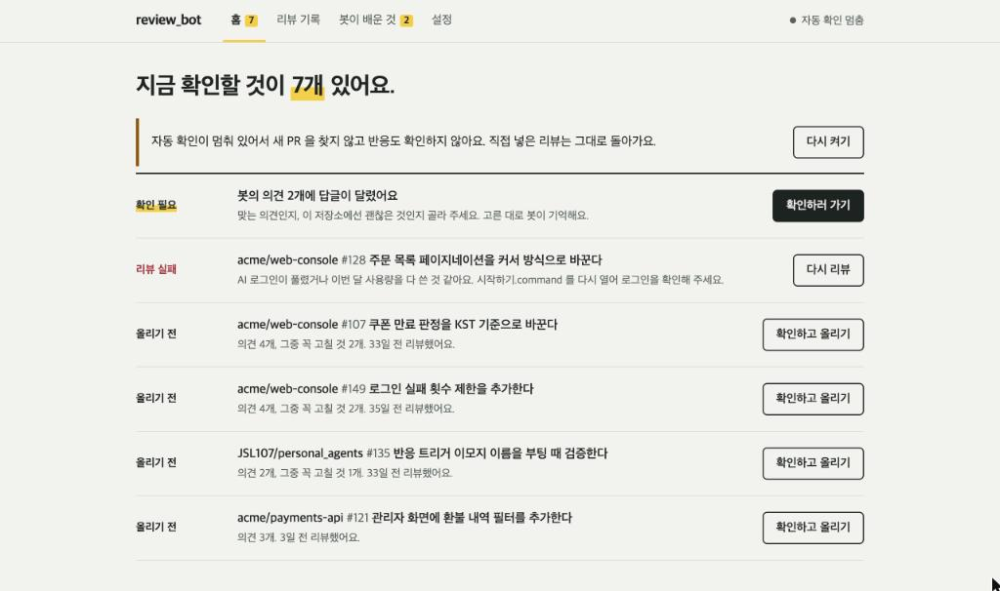
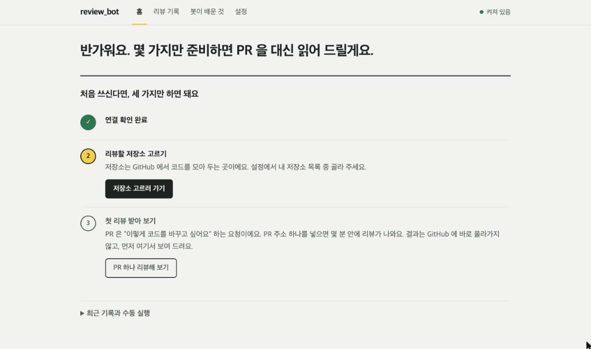

PR 을 대신 읽고
고칠 곳을 짚어 주는 리뷰 봇
동료가 올린 코드 변경(PR)을 AI 가 먼저 읽고, 어디를 왜 고치면 좋을지 정리해 드려요. 이미 쓰고 있는 ChatGPT 나 Claude 구독으로 돌아가서 따로 드는 돈이 없어요.
내려받기 (zip) 지금은 Mac 에서만 더블클릭으로 설치할 수 있어요. Linux 는 아래 안내를 봐 주세요.
무엇을 해 주나요
지켜볼 저장소를 골라 두면, 새 PR 이 올라올 때마다 봇이 읽고 의견을 정리해요. 의견은 "꼭 고칠 것", "고치면 좋은 것", "테스트가 빠진 곳" 으로 나눠 보여 줘요.
결과는 바로 GitHub 에 올라가지 않아요. 먼저 내 화면에서 확인하고, 괜찮을 때 "확인하고 올리기" 를 누르면 PR 에 남아요.
봇이 틀린 말을 하면 GitHub 에서 👎 를 누르고 이유를 답글로 남겨 주세요. 같은 종류의 이유가 두 번 쌓이면 봇이 기억하고, 그 저장소에서는 더 이상 같은 말을 하지 않아요.
준비물
- MacmacOS 가 깔린 컴퓨터. 관리자 비밀번호는 필요 없어요.
- GitHub 계정리뷰할 저장소를 볼 수 있는 계정이어야 해요.
- AI 구독 하나ChatGPT Plus 이상, 또는 Claude Pro 이상. 둘 중 하나만 있으면 돼요.
- 10분처음 한 번만 걸려요. 다음부터는 더블클릭 한 번이면 켜져요.
설치하기
내려받고 압축 풀기
위의 내려받기 를 누르면
review_bot-main.zip이 받아져요. 다운로드 폴더에서 더블클릭하면review_bot-main폴더가 생겨요. Safari 는 압축을 알아서 풀어 줘요.폴더는 어디에 두어도 괜찮아요. 다만 나중에 다시 켤 때 찾기 쉬운 곳(예: 문서 폴더)으로 옮겨 두면 편해요.
시작하기.command 열기
폴더 안의 시작하기.command 를 찾아 주세요. 처음 한 번은 Mac 이 "확인되지 않은 개발자" 라며 막을 수 있어요. 그럴 때는 이렇게 열어요.
- 파일을 control 키를 누른 채 클릭하거나, 오른쪽 클릭해요.
- 메뉴에서 열기 를 고르고, 한 번 더 뜨는 창에서도 열기 를 눌러요.
그래도 안 열리면 시스템 설정 → 개인정보 보호 및 보안 맨 아래의 "그래도 열기" 를 눌러 주세요.
검은 창의 안내 따라가기
검은 창(터미널)이 열리고, 필요한 것을 하나씩 확인해요. 없는 것은 알아서 설치해요. 사람이 할 일은 로그인 두 번뿐이에요.
review_bot 을 준비할게요. 1/5 실행 도구(Node.js) 확인 ✓ Node.js 를 설치했어요. 2/5 GitHub 연결 도구(gh) 확인 ✓ gh 를 설치했어요. 3/5 GitHub 로그인 ① 아래에 8자리 코드가 나오고, 자동으로 복사돼요. ② Enter 를 누르면 브라우저가 열려요. …GitHub 로그인: 창에 8자리 코드가 나오면 이미 복사된 상태예요. Enter 를 누르면 브라우저가 열리니, 코드 칸에 붙여 넣고(⌘ + V) 승인해 주세요.
AI 고르기: ChatGPT 를 쓰면 1, Claude 를 쓰면 2 를 누르고 Enter. 브라우저가 열리면 평소 쓰는 계정으로 로그인하면 돼요.
브라우저에서 첫 화면 보기
준비가 끝나면 브라우저에 review_bot 이 저절로 열려요. 첫 화면이 남은 일을 순서대로 알려 줘요. 리뷰할 저장소를 고르고, PR 하나를 넣어 보면 끝이에요.

처음 켰을 때의 화면. 첫 단계는 설치하면서 이미 끝나 있어요.
매일 쓰는 법
시작하기.command 를 더블클릭하면 켜져요. 두 번째부터는 확인만 하고 바로 브라우저를 열어요.
검은 창은 review_bot 이 돌아가는 동안 열어 두어야 해요. 창을 닫으면 꺼지고, 브라우저 화면에 "꺼져 있어요" 라고 나와요. 다시 쓰려면 또 더블클릭하면 돼요.
리뷰가 PR 에 올라가기까지
- 새 PR 이 올라오면 봇이 알아서 읽어요. 직접 넣고 싶으면 "리뷰 기록" 화면에 PR 주소를 붙여 넣어요.
- 홈에 "올리기 전" 으로 나타나면 확인하고 올리기 를 눌러요. 어떤 의견이 어느 코드 줄에 붙을지 미리 보여 줘요.
- 괜찮으면 이대로 올리기. 내 GitHub 계정 이름으로 PR 에 남아요.
- 올라간 의견에 👍 나 👎 가 달리면 봇이 30분마다 확인해서 성적에 반영해요.
설정에서 저장소마다 "확인하지 않고 바로 올리기" 를 켤 수 있어요. 켜면 사람이 보기 전에 의견이 올라가요. 결과를 몇 번 보고 믿을 만할 때 켜는 것을 권해요.
안심하고 써도 되나요
내 코드는 어디로 가나요?
review_bot 은 내 컴퓨터에서만 돌아가요. 리뷰할 때는 PR 의 바뀐 부분을 내가 고른 AI(ChatGPT 나 Claude)에 보내요. 평소에 그 서비스에 코드를 붙여 넣는 것과 같은 길이에요. 회사 코드라면 회사가 그 AI 사용을 허용하는지 먼저 확인해 주세요.
.env 처럼 비밀번호가 들어 있을 만한 파일은 내용을 보내지 않아요.
비밀번호를 어디에 저장하나요?
review_bot 은 비밀번호를 받지도 저장하지도 않아요. GitHub 와 AI 로그인은 각 서비스의 공식 화면에서 하고, 로그인 정보는 각 연결 도구가 내 컴퓨터에 보관해요. GitHub 와 Claude 는 Mac 의 키체인에, ChatGPT 는 홈 폴더의 .codex 폴더에 둬요.
다른 사이트가 이 봇을 몰래 움직일 수 있나요?
review_bot 화면은 내 컴퓨터 안에서만 열리고, 다른 웹사이트에서 보낸 요청은 거절해요. AI 도 내 컴퓨터의 다른 파일을 읽을 수 없게 막아 둔 채로 실행해요.
설치한 것을 지우고 싶어요
review_bot-main 폴더를 휴지통에 넣고, 홈 폴더의 숨김 폴더 .review_bot 도 지우면 끝이에요. 숨김 폴더는 Finder 에서 ⌘ + shift + . 을 누르면 보여요.
막혔을 때
더블클릭했더니 글자가 가득한 편집기가 열려요
파일에 실행 권한이 빠진 경우예요. 응용 프로그램 → 유틸리티 → 터미널 을 열고, bash 와 띄어쓰기 한 칸을 입력한 다음 시작하기.command 파일을 터미널 창으로 끌어다 놓고 Enter 를 눌러 주세요.
검은 창에 "멈췄어요" 가 나왔어요
바로 위 줄에 이유가 적혀 있어요. 대부분 인터넷 연결이나 로그인 문제라서, 창을 닫고 시작하기.command 를 다시 열면 멈춘 곳부터 이어서 해요. 설치 기록은 ~/.review_bot/install.log 에 남아요.
리뷰가 "리뷰 실패" 로 끝나요
가장 흔한 이유는 AI 로그인이 풀렸거나 이번 달 사용량을 다 쓴 경우예요. 시작하기.command 를 다시 열면 로그인 상태를 확인해 줘요. 화면의 실패 줄에도 무엇을 하면 되는지 적혀 있어요.
저장소 목록에 우리 회사 저장소가 없어요
GitHub 에 로그인한 계정이 그 저장소를 볼 수 있어야 해요. 회사 조직이 외부 앱 접근을 막아 둔 경우도 있으니, 조직 관리자에게 "GitHub CLI 접근을 허용해 달라" 고 요청해 주세요.
Windows 나 Linux 에서 쓰고 싶어요
Linux 에서는 터미널에서 bash 시작하기.command 로 똑같이 설치할 수 있어요. Windows 는 아직 더블클릭 설치를 지원하지 않아요. 개발자라면 README 의 직접 설치 방법을 따라 주세요.